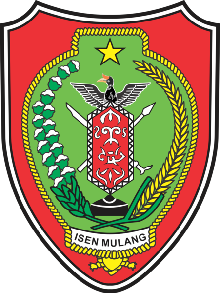
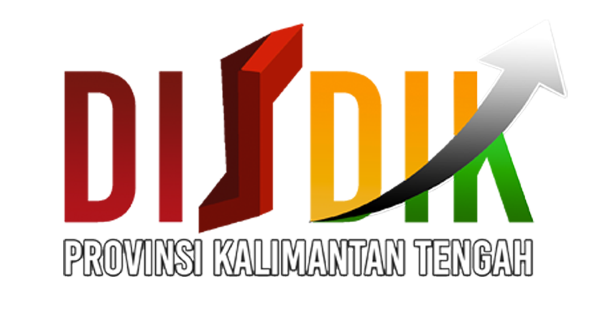
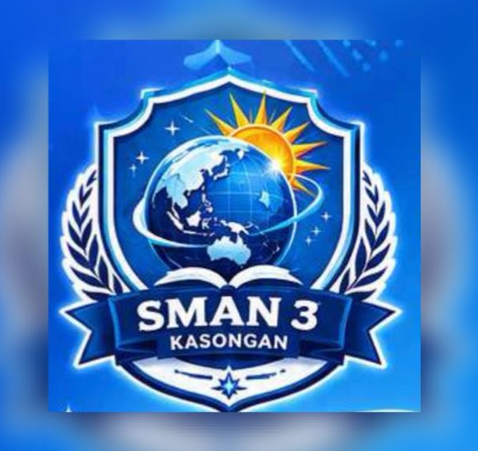

Penelitian
Geografi
Pengertian · Jenis · Langkah-langkah · Variabel · Populasi & Sampel · Instrumen · Analisis · Laporan
Metode Ilmiah untuk Memahami Fenomena Geosfer
Peta Konsep Besar
Alur 3 PertemuanPengertian & Jenis Penelitian Geografi Dasar-Dasar & Pengayaan Konsep
Apersepsi
Pemicu Sebelum BelajarPernahkah kamu bertanya-tanya: "Mengapa banjir sering terjadi di daerah ini, tapi tidak di daerah lain?" atau "Mengapa penduduk di sini bermata pencaharian sebagai nelayan, sedangkan di desa sebelah sebagai petani?" — Itulah benih penelitian geografi! Penelitian lahir dari rasa ingin tahu.
Pertanyaan Pemantik
Renungkan dulu sebelum lanjut- Apa perbedaan antara "mengamati" dan "meneliti"?
- Mengapa penelitian geografi berbeda dengan penelitian sosiologi atau biologi?
- Jika kamu ingin meneliti banjir di Katingan, langkah pertama apa yang kamu lakukan?
Pemahaman Bermakna
Mengapa ini penting?Memahami penelitian geografi membuat kita mampu menjawab masalah nyata di sekitar kita — bukan dengan opini, tetapi dengan data dan metode ilmiah. Keterampilan ini berguna seumur hidup: dari memilih lokasi usaha, hingga merancang kebijakan publik.
Tujuan Pembelajaran
- Menjelaskan pengertian penelitian geografi dan ciri khasnya (pendekatan keruangan, kelingkungan, kewilayahan).
- Membedakan penelitian geografi dengan penelitian ilmu lain (sosiologi, ekologi, geologi).
- Mengidentifikasi jenis-jenis penelitian geografi berdasarkan tujuan (eksploratif, deskriptif, eksplanatif) dan metodologi (kuantitatif & kualitatif).
- Memahami konsep variabel penelitian (bebas, terikat, kontrol) dan etika penelitian geografi.
Peta Konsep Pertemuan 1
Alur materi🖼️ Galeri Gambar 3D Tilt
Hover untuk efek 3D · Klik untuk zoom 🔍 Zoom
01 / 04
🔍 Zoom
01 / 04
 🔍 Zoom
02 / 04
🔍 Zoom
02 / 04
 🔍 Zoom
03 / 04
🔍 Zoom
03 / 04
A. Pengertian Penelitian Geografi Ciri Khas & Pendekatan
▼Penelitian adalah kegiatan menyelidiki, mengembangkan, dan menguji kebenaran secara mendalam untuk memecahkan suatu permasalahan.
Penelitian geografi adalah penelitian yang menggunakan pendekatan keruangan, kelingkungan, dan kewilayahan dalam mengkaji fenomena geosfer.
Perbedaan dengan Ilmu Lain
| Ilmu | Fokus Kajian | Perbedaan dengan Geografi |
|---|---|---|
| Sosiologi | Hubungan antar manusia & struktur sosial | Tidak memperhatikan aspek fisik dan spasial. |
| Ekologi | Hubungan makhluk hidup dengan lingkungan | Fokus pada interaksi biologis, kurang aspek spasial & kewilayahan. |
| Geologi | Batuan, struktur bumi, proses pembentukannya | Spesifik pada litosfer, kurang memperhatikan aspek manusia. |
Contoh Penelitian Geografi di Indonesia
- Banjir Jakarta: Penelitian tentang hubungan antara perubahan tata guna lahan di hulu (Bogor) dengan intensitas banjir di hilir.
- Deforestasi Kalimantan: Kajian tentang dampak pembukaan lahan perkebunan sawit terhadap hilangnya habitat orangutan.
- Abrasi Pantai Utara Jawa: Penelitian tentang faktor penyebab abrasi dan upaya mitigasi dengan bangunan pantai.
🛡️ Etika Penelitian Geografi
- Tidak merusak lingkungan saat mengambil data.
- Menjaga kerahasiaan identitas responden jika diperlukan.
- Mencantumkan sumber data dengan jujur (anti-plagiarisme).
- Mendapatkan izin dari pihak terkait sebelum melakukan penelitian.
B. Jenis Penelitian & Variabel Klasifikasi & Konsep Dasar
▼Penelitian geografi diklasifikasikan berdasarkan tujuan dan metodologi. Selain itu, penting untuk memahami variabel penelitian.
Berdasarkan Tujuan
| Jenis | Tujuan | Contoh |
|---|---|---|
| Eksploratif | Mendalami atau mengembangkan dasar pengetahuan tentang fenomena geosfer. | Menemukan pola persebaran flora langka di suatu wilayah. |
| Deskriptif | Menjelaskan fenomena geosfer dalam bentuk deskripsi, gambar, dan sistematika. | Mendeskripsikan karakteristik fisik dan sosial suatu desa. |
| Eksplanatif | Menemukan penyebab suatu fenomena geosfer berdasarkan hipotesis. | Mencari hubungan antara tutupan lahan dan intensitas banjir. |
Berdasarkan Metodologi
Kuantitatif
- Masalah sudah jelas.
- Menguji kebenaran data yang ada.
- Data terukur, analisis statistik.
Contoh: Survei kepadatan penduduk dengan kuesioner.
Kualitatif
- Masalah belum jelas.
- Mengetahui fakta yang ada.
- Data naratif/deskriptif.
Contoh: Wawancara mendalam tentang dampak banjir.
Konsep Variabel Penelitian
| Jenis Variabel | Penjelasan | Contoh |
|---|---|---|
| Variabel Bebas (Independen) | Faktor yang mempengaruhi / menjadi penyebab. | Curah hujan, kepadatan penduduk, tutupan lahan. |
| Variabel Terikat (Dependen) | Faktor yang dipengaruhi / menjadi akibat. | Intensitas banjir, tingkat erosi, kualitas air. |
| Variabel Kontrol | Faktor yang dijaga tetap agar tidak mengganggu hasil. | Jenis tanah, waktu pengukuran, instrumen yang sama. |
💡 Contoh: Penelitian "Pengaruh Curah Hujan (bebas) terhadap Intensitas Banjir (terikat) di Jakarta" dengan variabel kontrol: kondisi topografi yang relatif sama.
Aktivitas Pembelajaran
Kerjakan berpasangan- Think–Pair–Share: Diskusikan: "Apa perbedaan penelitian geografi dengan penelitian sosiologi?"
- Identifikasi Variabel: Ambil satu judul penelitian (misal: "Pengaruh Suhu Udara terhadap Penguapan Air Danau"). Tentukan variabel bebas, terikat, dan kontrolnya.
- Klasifikasi: Kelompokkan 5 judul penelitian ke dalam jenis eksploratif, deskriptif, atau eksplanatif.
Diferensiasi
Sesuaikan gaya belajarmu- Visual: Gambar peta konsep "Jenis Penelitian Geografi" dengan warna berbeda.
- Auditori: Rekam penjelasan singkat (1 menit) tentang 3 jenis penelitian geografi.
- Kinestetik: Buat kartu-kartu variabel, lalu susun menjadi skema penelitian sederhana.
Pengayaan
Untuk yang sudah pahamCari satu jurnal penelitian geografi di internet (Google Scholar). Identifikasi: (1) tujuan penelitian, (2) jenis penelitian, (3) variabel yang digunakan. Tulis ringkasannya 1 halaman.
Remedial
Untuk yang perlu penguatanBuat tabel sederhana: 3 jenis penelitian + 1 contoh masing-masing. Hafalkan dengan metode menghubungkan ke kehidupan sehari-hari.
Refleksi Pertemuan 1
Tulis di buku catatan- Hal baru apa yang kamu pelajari hari ini?
- Bagian mana yang masih membingungkan?
- Jika kamu menjadi peneliti, topik geografi apa yang ingin kamu teliti? Mengapa?
Pengamatan, Populasi, Sampel & Instrumen Dari Pengamatan ke Pengumpulan Data
Apersepsi
PemicuBayangkan kamu ingin mengetahui pendapat 500 siswa tentang kebersihan kantin. Apakah kamu harus bertanya kepada semuanya? Tentu tidak! Di sinilah konsep populasi dan sampel berperan — seni memilih sebagian untuk mewakili keseluruhan.
Pertanyaan Pemantik
Renungkan- Mengapa peneliti tidak selalu meneliti seluruh populasi?
- Apa risiko jika sampel yang diambil tidak mewakili populasi?
- Kapan sebaiknya menggunakan kuesioner, kapan menggunakan wawancara?
Pemahaman Bermakna
Mengapa penting?Kemampuan merancang instrumen dan memilih sampel yang tepat membuat penelitian kita valid dan dapat dipercaya. Ini keterampilan yang berguna di dunia kerja: dari survei pasar hingga evaluasi kebijakan.
Tujuan Pembelajaran
- Menjelaskan proses pengamatan fenomena geografi sebagai awal penelitian.
- Menentukan masalah dan merumuskan pertanyaan penelitian (apa, di mana, mengapa).
- Memahami konsep populasi dan sampel serta teknik pengambilannya.
- Mengidentifikasi 6 teknik pengumpulan data beserta kelebihan & kelemahannya.
- Membuat instrumen sederhana (lembar observasi dan kuesioner).
Peta Konsep Pertemuan 2
Alur materi🖼️ Galeri Gambar 3D Tilt
Hover untuk efek 3D · Klik untuk zoom 🔍 Zoom01 / 04
🔍 Zoom01 / 04
 🔍 Zoom02 / 04
🔍 Zoom02 / 04
 🔍 Zoom03 / 04
🔍 Zoom03 / 04
A. Pengamatan & Masalah Penelitian Awal & Fokus
▼Pengamatan fenomena geografi merupakan proses awal menghasilkan pengetahuan ilmiah. Pengamatan dilakukan untuk mendapatkan informasi tentang fenomena geografi yang terjadi, tentang apa atau mengapa fenomena itu terjadi dan di mana fenomena itu terjadi.
Menentukan Masalah Penelitian
Masalah adalah kesenjangan antara kondisi yang seharusnya dan kondisi yang terjadi. Sumber masalah:
- Hasil penelitian orang lain
- Kepustakaan
- Pengamatan langsung di lapangan
- Ketersediaan data
Rumusan Masalah (3W)
- Apa masalahnya? (gejala)
- Di mana masalahnya? (lokasi & ruang)
- Mengapa masalahnya terjadi? (interelasi, interdependensi, interaksi)
B. Populasi & Sampel Subjek Penelitian
▼Populasi adalah keseluruhan subjek yang menjadi sasaran penelitian. Sampel adalah bagian dari populasi yang diambil untuk diteliti.
Populasi
Keseluruhan subjek penelitian. Contoh: Seluruh siswa SMAN 3 Kasongan (500 siswa).
Sampel
Bagian dari populasi yang diteliti. Contoh: 50 siswa dari kelas X-1 dan X-2.
Teknik Pengambilan Sampel
- Random (Acak): Setiap anggota populasi memiliki peluang sama. Contoh: Mengundi nomor absen.
- Purposive (Bertujuan): Dipilih berdasarkan kriteria tertentu. Contoh: Hanya siswa yang tinggal di daerah rawan banjir.
- Stratified (Berstrata): Populasi dibagi kelompok (strata), lalu diambil sampel dari setiap strata. Contoh: Mengambil siswa dari setiap kelas secara proporsional.
🏫 Contoh Kontekstual: Penelitian tentang "Persepsi Siswa terhadap Kebersihan Lingkungan Sekolah": Populasi = seluruh siswa SMAN 3 Kasongan (500 siswa). Sampel = 100 siswa yang diambil secara random dari berbagai kelas.
C. Teknik & Instrumen Pengumpulan Data 6 Metode + Contoh Instrumen
▼Data yang baik harus: objektif, mewakili, memiliki tingkat kesalahan kecil, tepat waktu, dan relevan.
| Teknik | Penjelasan | Kelebihan | Kelemahan |
|---|---|---|---|
| Observasi | Pengamatan langsung di lapangan. | Data akurat, langsung dari sumber. | Butuh waktu lama, terbatas pada yang terlihat. |
| Wawancara | Tanya jawab dengan narasumber. | Informasi mendalam & kontekstual. | Subjektif, butuh keahlian bertanya. |
| Angket (Kuesioner) | Pertanyaan tertulis yang diisi responden. | Efisien, menjangkau banyak responden. | Kurang mendalam, responden bisa asal jawab. |
| Pemetaan | Menggunakan peta untuk mengetahui kondisi wilayah. | Memberikan gambaran spasial yang jelas. | Membutuhkan keahlian kartografi. |
| Studi Kepustakaan | Mengumpulkan data dari buku, jurnal, dokumen. | Data mudah didapat, hemat biaya. | Data mungkin ketinggalan zaman. |
| Penginderaan Jauh | Menggunakan citra satelit atau foto udara. | Cakupan luas, akurat, terkini. | Biaya mahal, butuh perangkat lunak khusus. |
Contoh Instrumen Siap Pakai
📋 Lembar Observasi Lingkungan Sekolah
| No | Aspek yang Diamati | Kondisi (Ya/Tidak) | Keterangan |
|---|---|---|---|
| 1 | Ketersediaan tempat sampah | ||
| 2 | Kebersihan selokan | ||
| 3 | Penghijauan (pohon) |
📝 Contoh Kuesioner (5 Pertanyaan) – Kebersihan Sekolah
- Apakah kamu selalu membuang sampah pada tempatnya? (Ya/Tidak)
- Bagaimana kondisi kebersihan kelasmu? (Sangat Bersih / Bersih / Kotor / Sangat Kotor)
- Apakah sekolah menyediakan tempat sampah yang cukup? (Ya/Tidak)
- Apakah ada kegiatan gotong royong membersihkan lingkungan sekolah? (Ya/Tidak)
- Berikan saran untuk meningkatkan kebersihan sekolah! (Isian)
🏞️ Studi Kasus Lokal: "Merancang Penelitian tentang Sampah Plastik di Sungai Katingan" – Gunakan teknik observasi, wawancara, dan pemetaan.
Aktivitas Pembelajaran
Kerja kelompok- Membuat Kuesioner: Dalam kelompok, buat 5 pertanyaan kuesioner tentang topik lingkungan sekolah.
- Uji Coba: Tukarkan kuesioner dengan kelompok lain. Berikan masukan untuk perbaikan.
- Simulasi Wawancara: Berpasangan, lakukan simulasi wawancara tentang dampak banjir dengan warga.
Diferensiasi
Pilih caramu- Visual: Buat infografis "6 Teknik Pengumpulan Data" dengan ikon.
- Auditori: Rekam podcast 2 menit tentang pengalaman melakukan wawancara.
- Kinestetik: Peragakan teknik observasi di halaman sekolah (5 menit).
Pengayaan
Sudah pahamRancang kuesioner lengkap (10 pertanyaan) untuk penelitian "Kepuasan Siswa terhadap Fasilitas Sekolah". Sertakan skala Likert 1–5.
Remedial
Perlu penguatanBuat kartu hafalan: 6 teknik pengumpulan data + 1 contoh. Hafalkan dengan metode berpasangan.
Refleksi Pertemuan 2
Tulis di buku catatan- Teknik pengumpulan data mana yang paling menarik untukmu? Mengapa?
- Apa kesulitan yang kamu bayangkan saat harus mewawancarai orang?
- Bagaimana kamu memastikan sampelmu mewakili populasi?
Pengolahan, Analisis, Laporan & Proyek Dari Data Menjadi Karya Ilmiah
Apersepsi
PemicuBayangkan kamu punya 100 lembar kuesioner yang sudah diisi. Tumpukan kertas itu belum berarti apa-apa sampai kamu mengolah dan menganalisisnya. Di sinilah keajaiban penelitian terjadi — dari data mentah menjadi kesimpulan bermakna.
Pertanyaan Pemantik
Renungkan- Mengapa data mentah perlu "disunting" dulu sebelum diolah?
- Apa perbedaan tabel, grafik, dan peta dalam penyajian data?
- Bagaimana cara menulis kesimpulan yang baik?
Pemahaman Bermakna
Mengapa penting?Kemampuan mengolah data menjadi laporan adalah keterampilan abad 21 — data literacy. Ini berguna untuk kuliah, bekerja, bahkan saat memutuskan sesuatu dalam hidup.
Tujuan Pembelajaran
- Menjelaskan 4 tahapan pengolahan data (penyuntingan, kode, tabulasi, pemetaan) dengan contoh.
- Mengidentifikasi 4 jenis analisis data (statistik, penginderaan jauh, SIG, deskriptif).
- Menulis daftar pustaka dengan format yang benar dan membuat laporan penelitian yang sistematis.
- Merancang dan melaksanakan proyek penelitian mini secara berkelompok.
Peta Konsep Pertemuan 3
Alur materi🖼️ Galeri Gambar 3D Tilt
Hover untuk efek 3D · Klik untuk zoom 🔍 Zoom01 / 04
🔍 Zoom02 / 04
🔍 Zoom03 / 04
🔍 Zoom01 / 04
🔍 Zoom02 / 04
🔍 Zoom03 / 04
A. Pengolahan Data & Contoh 4 Tahapan + Ilustrasi
▼Pengolahan data dilakukan melalui 4 tahapan:
| Tahapan | Penjelasan |
|---|---|
| Penyuntingan Data | Memeriksa kelengkapan dan keseragaman data. |
| Pembuatan Kode | Mengklasifikasikan data dengan kode tertentu (misal: L= Laki-laki, P=Perempuan). |
| Tabulasi Data | Menyajikan data dalam tabel, grafik, atau diagram. |
| Pemetaan | Mengubah data menjadi informasi keruangan dalam peta. |
📊 Contoh Tabulasi Sederhana
Data Kebiasaan Membuang Sampah (20 Responden):
Tabel Frekuensi
| Kebiasaan | Frekuensi |
|---|---|
| Selalu buang sampah pada tempatnya | 12 |
| Kadang-kadang | 5 |
| Jarang | 3 |
Diagram Batang
Kadang: █████ (5)
Jarang: ███ (3)
B. Analisis Data 4 Metode & Interpretasi
▼Analisis data dalam penelitian geografi dapat dilakukan dengan 4 metode:
Statistik
Analisis kuantitatif dengan data terukur (mean, korelasi).
Penginderaan Jauh
Menganalisis citra satelit untuk melihat perubahan lahan.
SIG
Analisis berbasis komputer untuk data spasial (overlay, buffer).
Deskriptif
Analisis naratif yang menggambarkan fenomena secara kualitatif.
🧠 Interpretasi Data: Jika data menunjukkan bahwa 60% siswa jarang membuang sampah pada tempatnya, maka dapat diinterpretasikan bahwa kesadaran kebersihan masih rendah. Kesimpulan: Diperlukan kampanye dan penambahan tempat sampah.
C. Laporan & Daftar Pustaka Struktur & Format Penulisan
▼Laporan penelitian geografi disusun dengan struktur yang sistematis.
Bagian Pembuka
- Halaman Judul
- Kata Pengantar
- Daftar Isi
- Daftar Gambar, Tabel, Lampiran
Bagian Isi
- Bab 1: Pendahuluan (latar belakang, rumusan masalah, tujuan)
- Bab 2: Tinjauan Pustaka (landasan teori)
- Bab 3: Metode Penelitian (jenis, teknik, instrumen)
- Bab 4: Pembahasan (hasil dan analisis)
- Bab 5: Simpulan dan Saran
Bagian Penutup
- Daftar Pustaka
- Lampiran
Cara Menulis Daftar Pustaka
Format: Nama Penulis. (Tahun). Judul Buku. Kota: Penerbit.
Contoh: Bintarto. (1989). Metode Penelitian Geografi. Yogyakarta: UGM Press.
Tips: Urutkan secara alfabetis berdasarkan nama penulis. Gunakan huruf miring untuk judul buku.
🚀 Proyek Mini: Aksi Penelitian Geografi!
Bekerjalah dalam kelompok (4–5 orang). Lakukan penelitian sederhana tentang fenomena di lingkungan sekolah!
- Langkah 1: Pilih tema (misal: kebersihan kantin, kepadatan lalu lintas di gerbang sekolah, atau jenis sampah terbanyak).
- Langkah 2: Rumuskan masalah dan hipotesis (3W).
- Langkah 3: Tentukan populasi dan sampel (jika menggunakan kuesioner).
- Langkah 4: Kumpulkan data dengan observasi, wawancara, atau kuesioner.
- Langkah 5: Olah data (tabulasi) dan analisis (deskriptif/statistik sederhana).
- Langkah 6: Buat laporan singkat (2–3 halaman) dan presentasikan di depan kelas!
⏰ Durasi: 2 minggu (dikerjakan di luar jam pelajaran).
Aktivitas Pembelajaran
Kerja kelompok- Latihan Tabulasi: Berikan data mentah 20 responden, buat tabel frekuensi dan diagram batang.
- Interpretasi: Baca hasil tabulasi, tarik kesimpulan singkat (2-3 kalimat).
- Latihan Daftar Pustaka: Berikan 3 sumber, tulis daftar pustakanya sesuai format.
Diferensiasi
Pilih caramu- Visual: Buat poster alur "Dari Data ke Laporan".
- Auditori: Rekam penjelasan 2 menit tentang 4 tahap pengolahan data.
- Kinestetik: Simulasikan proses tabulasi menggunakan kartu-kartu data.
Pengayaan
Sudah pahamAmbil data BPS tentang jumlah penduduk Katingan 5 tahun terakhir. Buat grafik tren dan tulis interpretasi 1 halaman.
Remedial
Perlu penguatanHafalkan 4 tahap pengolahan data dengan singkatan P-K-T-P (Penyuntingan, Kode, Tabulasi, Pemetaan). Beri 1 contoh tiap tahap.
Refleksi Pertemuan 3
Tulis di buku catatan- Bagian mana dari pengolahan data yang paling menantang? Mengapa?
- Apa rencanamu setelah menyelesaikan proyek mini?
- Bagaimana keterampilan ini berguna untuk cita-citamu?
Asesmen Sumatif Evaluasi 3 Pertemuan (HOTS)
Pilihan Ganda (ABCDE)
35 SoalPilih satu jawaban paling tepat! (Soal HOTS ditandai *)
Benar / Salah
15 SoalTuliskan B (Benar) atau S (Salah) pada lembar jawaban!
Essay (HOTS)
5 SoalJawab dengan jelas dan sistematis!
Kunci Jawaban & Pedoman Penskoran
Hanya untuk Guru📘 PG HOTS (35 Soal)
📗 B/S (15 Soal)
✍️ Essay (5 Soal) – Pedoman Penskoran
Refleksi Akhir Menyimpulkan Perjalanan 3 Pertemuan
🌟 Apa yang Kamu Dapatkan?
- ✓Memahami pengertian, ciri khas, dan jenis penelitian geografi.
- ✓Mengenal konsep variabel, populasi, dan sampel.
- ✓Menguasai 6 teknik pengumpulan data dan contoh instrumen.
- ✓Memahami tahap pengolahan, analisis, dan interpretasi data.
- ✓Mampu menyusun laporan dan daftar pustaka dengan benar.
- ✓Merancang proyek penelitian mini secara mandiri dan kelompok.
🪞 Renungkan
"Bagaimana keterampilan penelitian geografi dapat membantumu menjadi pemecah masalah di lingkungan sekitarmu?"
Tulis refleksi metakognitif di buku catatan — minimal 1 halaman.
🎉 Selamat!
Kamu telah menyelesaikan 3 Pertemuan materi Penelitian Geografi yang diperkaya!
Referensi & Glosarium Daftar Pustaka dan Istilah Penting
📚 Daftar Pustaka
- Kurikulum Merdeka: CP IPS Fase E-F, BSKAP Kemendikbudristek (2024).
- Suharyono & Amien, M. (2013). Pengantar Filsafat Geografi. Yogyakarta: Ombak.
- Bintarto. (1989). Metode Penelitian Geografi. Yogyakarta: UGM Press.
- Muta'ali, Luthfi. (2015). Geografi Pemukiman. Yogyakarta: UGM Press.
- Sartono Kartodirdjo. (1992). Pendekatan Ilmu Sosial dalam Metodologi Sejarah. Jakarta: Gramedia.
- Haggett, Peter. (2001). Geography: A Modern Synthesis. New York: Harper & Row.
- de Blij, H.J. & Muller, P.O. (2010). Geography: Realms, Regions and Concepts. New York: Wiley.
- Daldjoeni, N. (2005). Geografi untuk Indonesia. Bandung: Alumni.
- Sumaatmadja, Nursid. (1988). Metodologi Pengajaran Geografi. Jakarta: Bumi Aksara.
- I Made Sandy. (2004). Republik Indonesia: Geografi Regional. Jakarta: UI Press.
📖 Glosarium
| Istilah | Pengertian |
|---|---|
| Eksplanatif | Penelitian yang bertujuan menemukan penyebab fenomena berdasarkan hipotesis. |
| Eksploratif | Penelitian yang menggali informasi awal tentang fenomena yang belum banyak diketahui. |
| Hipotesis | Dugaan sementara yang akan diuji kebenarannya melalui penelitian. |
| Instrumen | Alat yang digunakan untuk mengumpulkan data (kuesioner, lembar observasi, dll). |
| Kualitatif | Penelitian dengan data naratif/deskriptif, tidak berupa angka. |
| Kuantitatif | Penelitian dengan data berupa angka dan analisis statistik. |
| Populasi | Keseluruhan subjek yang menjadi sasaran penelitian. |
| Sampel | Bagian dari populasi yang diambil untuk diteliti. |
| Tabulasi | Penyajian data dalam bentuk tabel, grafik, atau diagram. |
| Variabel Bebas | Faktor yang mempengaruhi / menjadi penyebab dalam penelitian. |
| Variabel Terikat | Faktor yang dipengaruhi / menjadi akibat dalam penelitian. |
| Variabel Kontrol | Faktor yang dijaga tetap agar tidak mengganggu hasil penelitian. |